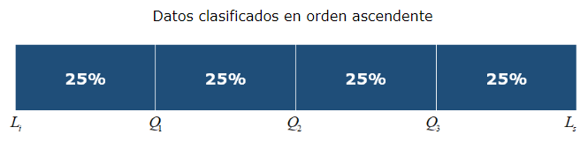
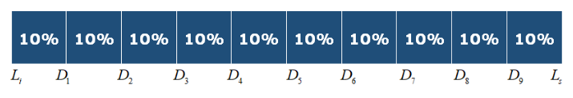
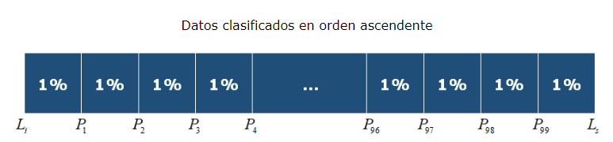

CUARTILES DECILES Y PERCENTILES
CUARTILES DECILES Y PERCENTILES
Son los valores de la variable que dividen los datos ordenados en cuartos; cada conjunto de datos tiene tres cuartiles. El primer cuartil, Q1, es un número tal que a lo mucho 25% de los datos son menores en el valor que Q1 y a lo sumo 75% son mayores. El segundo cuartil,Q2 , es la mediana (50%). El tercer cuartil, Q3, es un número tal que a lo mucho 75% de los datos son menores en valor que Q3 y a lo sumo 25% son mayores.

Cada conjunto de datos tiene tres cuartiles que lo dividen en cuatro partes iguales. El primer cuartil Q1 es ese valor debajo del cual clasifica el 25% de las observaciones, y sobre el cual puede encontrarse el 75% restante. El segundo cuartil Q2 es justo la mitad. La mitad de las observaciones están por debajo y la mitad por encima; en este sentido, es lo mismo que la mediana. El tercer cuartil Q3 es el valor debajo del cual está el 75% de las observaciones y encima del cual puede encontrarse el 25% restante.
Son valores de la variable que dividen los datos ordenados en diez partes iguales (9 divisiones).
Es uno de los nueve valores que dividen, en diez partes iguales, un grupo de datos ordenados.
El decil, por tanto, no es más que un tipo de cuantil, o una serie de particiones que se llevan a cabo en los datos de una muestra o población.

Datos clasificados en orden ascendente.
Para calcular la posición de los deciles de una serie de datos estadísticos debes multiplicar el número del decil por la suma del número total de datos más uno y dividir el resultado entre diez.
Son los valores de la variable que dividen un conjunto de datos en 100 subconjuntos iguales; cada conjunto de datos tiene 99 percentiles. El k-ésimo percentil, Pk, es un valor que a lo mucho k% de los datos son menores en valor que Pk y a lo sumo (100-k)% de los datos son mayores.

Los deciles separan un conjunto de datos en 10 subconjuntos iguales, y los percentiles en 100 partes. El primer decil es la observación debajo de la cual se encuentra el 10% de las observaciones, mientras que el 90% restante se encuentra encima de éste. El primer percentil es el valor debajo del cual se encuentra el 1% de las observaciones, y el resto están encima de éste. Puede aplicarse una interpretación similar al resto de deciles y percentiles. Todo conjunto de datos tiene 9 deciles y 99 percentiles. Un percentil y su ubicación en un arreglo ordenado se identifican mediante los subíndices. Por ejemplo, el decimoquinto percentil se indica cómo P15, y su ubicación en la serie ordenada es L15.
Ejemplo elaborado por medio de la recoleccion de datos relacionados a Peso y Talla del Grupo 603.

Resultados